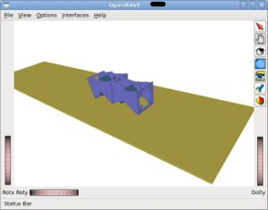
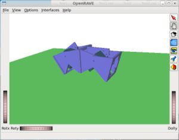
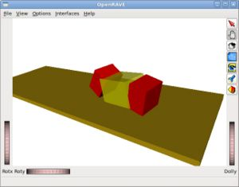

Contenido
[ocultar]Introducción
OpenRave es un entorno libre para la simulación/modelado/planificación de robots, desarrollado por la comunidad científica. Lo están utilizando investigadores de todas partes del mundo para realizar experimentos con sus últimos robots y/o algoritmos.
El Openrave todavía es alfa y de momento sólo se puede probar bajándolo del svn oficial y compilándolo.
Mi interés por este software se centra en la simulación de robots modulares. No está implementado explícitamente y es lo que me gustaría aportar.
Características de OpenRave
- Es libre, por lo que cualquiera puede modificarlo para adaptarlo a sus necesidades
- Es multiplataforma: Linux/Mac/Windows
- Creado por investigadores para investigadores
- Utiliza el motor físico ODE, con el que he trabajado mucho (Cube Simulator, Tutorial: ODE y robots modulares)
- Tanto los robots como los entornos se almacenan en ficheros XML. Es muy fácil añadir nuevos entornos o robots
- Se pueden modelar piezas con mucho detalle, y no sólo usando geometrías simples
- El Blender se puede usar para el modelado de piezas y luego exportarlo al formato OpenInventor (iv) que es el usado por OpenRave
- Adicionalmente, se puede usar OpenScad para el diseño de las piezas, importar los STL a Blender y desde ahí exportar a OpenRave
- El visualizador de OpenRave permite interactuar con los objetos físicos de la simulación
- Es muy sencillo generar vídeos de la simulaciones
Evolución
OpenMR
- 09/Marzo/2010: (blog) : Comenzado el plug-in OpenMr.
He decidido crear un plug-in para trabajar con robots modulares: OpenMR: Modular Robots plug-in for Openrave. Todos los ejemplos y código necesarios para la locomoción de robots modulares los integraré en ese plugin.
Versión 0.3
- 07/Marzo/2010:(Blog) : Locomoción de Minicube-I. Tanto el modelo real como el hexaédrico, sin necesidad de parchear el OpenRave
A partir de la r1343 de OpenRave, han incluido en el SVN oficial el Odecontroller, un controlador para poder hacer simulaciones que establezcan la velocidad de los motores directamente usando la física del ODE. Ha sido realizado por Juan González y Rosen Diankov. Ahora ya se pueden probar los ejemplos de locomoción de robots modulares sin tener que parchear el OpenRave (como había que hacer en la versiones 0.1 y 0.2). ¡Esto es un gran avance! :-)
|
|
 Simulación de la locomoción de Minicube-I, usando módulos Y1 |

Para probar el ejemplo del vídeo, seguir los siguientes pasos:
- Bajar el paquete openrave-modular-robots-0.3.tar.gz
- Descomprimirlo
- Entrar en el directorio openrave-modular-robots-0.3
$ cd openrave-modular-robots-0.3
- Incluir en el path el directorio donde está openrave instalado. En mi caso es:
$ export PATH=$PATH:/home/juan/desarrollo/openrave/localinstall/bin
- Ejecutar cmake:
$ cmake .
- Compilar
$ make
- Ejecutar el ejemplo:
- Modelo hexaedrico:
$ ./Test Test-hexa.xml
- Modelo real:
$ ./Test Test-y1.xml
Se abrirá una ventana con el visualizador de openrave y se cargará el escenario con el robot Minicube-I. NOTA: El escenario inicial está "boca abajo". Pinchar el botón izquierdo del ratón y arrastrarlo para rotar la cámara y ver la simulación con la orientación correcta
En el terminal aparecerá el mensaje: PRESS A KEY TO START THE SIMULATION!. Apretar una tecla y darle al Enter. Minicube-I empezará a moverse
Versión 0.2
- 01/Marzo/2010: (Blog) Locomoción de la configuración mínima PP usando el modelo real de módulos Y1
|
|

El ejemplo mostrado en el vídeo es el test30.cpp (y test30.xml) que se encuentran en el paquete: 2010-03-01-test-cpp.zip
Para probarlo seguir las mismas indicaciones que los ejemplos de la versión 0.1
Versión 0.1
- 22/Feb/2010: Primera prueba de locomoción de la configuración mínima PP (Blog)
|
|
 Simulación de la locomoción de Minicube-I |


El ejemplo se encuentra en el fichero test16.cpp (y test16.xml) del paquete 2010-02-23-test-cpp.zip
Para probar los ejemplos es necesario seguir los siguientes pasos:
- Compilar e instalar el OpenRave. ¡Importante! Para que funcionen los servos es importante aplicar el parche patch-rev1323.diff a la revisión 1323
$ svn co -r 1323 $ cd openrave $ patch < patch-rev1323.diff $ cmake . $ make $ make install
- Descargar el paquete .zip de los ejemplos
- Abrir un terminal y cambiar el path para que apunte a los ejecutables de Openrave. En mi caso tengo que poner:
export PATH=$PATH:/home/juan/desarrollo/openrave/localinstall/bin
- Ejecutar cmake:
$ cmake .
- Ejecutar make
$ make
Descarga
Versión 0.3
| openrave-modular-robots-0.3.tar.gz | Locomoción de Minicube-I. Tanto el modelo real como el hexaédrico. |
Versión 0.2
| 2010-03-01-test-cpp.zip | Ejemplos de prueba en C++ |
Versión 0.1
| 2010-02-23-test-cpp.zip | Ejemplos de prueba en C++. El ejemplo test16.cpp es en el que se implementa la locomoción de Minicube-I |
| patch-rev1323.diff | Mini-parche a aplicar a la revision 1323 de OpenRave para que funcionen bien los servos |
Licencia
| |
| |
Autor
Enlaces
Noticias
- 09/Marzo/2010: Añadido enlace hacia el OpenMR
- 08/Marzo/2010: Añadida versión 0.3: Ejemplos para "odecontroller"
- 23/Feb/2010: Comenzada esta página